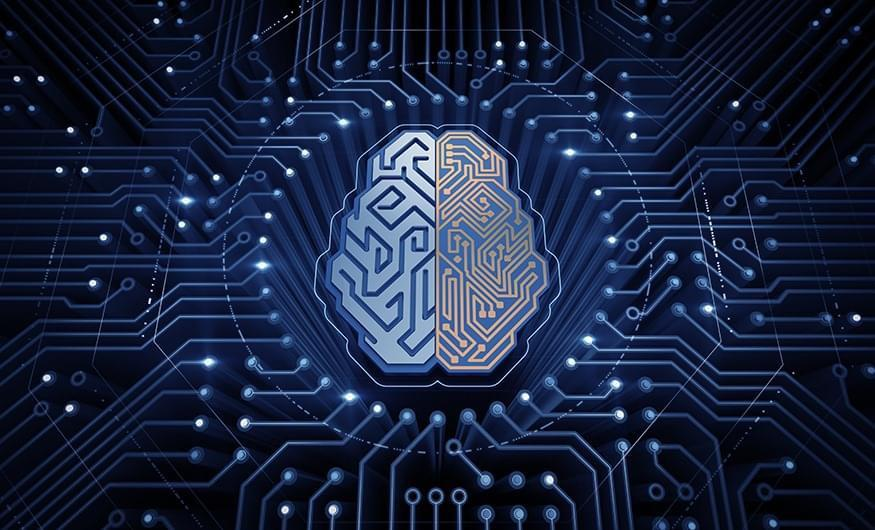

Artifical intelligence main page
links:

Artificial intelligence (AI) is intelligence demonstrated by machines, unlike the natural intelligence displayed by humans and animals, which involves consciousness and emotionality. The distinction between the former and the latter categories is often revealed by the acronym chosen. 'Strong' AI is usually labelled as artificial general intelligence (AGI) while attempts to emulate 'natural' intelligence have been called artificial biological intelligence (ABI). Leading AI textbooks define the field as the study of "intelligent agents": any device that perceives its environment and takes actions that maximize its chance of achieving its goals.[3] Colloquially, the term "artificial intelligence" is often used to describe machines that mimic "cognitive" functions that humans associate with the human mind, such as "learning" and "problem solving".
As machines become increasingly capable, tasks considered to require "intelligence" are often removed from the definition of AI, a phenomenon known as the AI effect. A quip in Tesler's Theorem says "AI is whatever hasn't been done yet." For instance, optical character recognition is frequently excluded from things considered to be AI, having become a routine technology. Modern machine capabilities generally classified as AI include successfully understanding human speech,[9] competing at the highest level in strategic game systems (such as chess and Go),[10] and also imperfect-information games like poker,[11] self-driving cars, intelligent routing in content delivery networks, and military simulations
Computer science defines AI research as the study of "intelligent agents": any device that perceives its environment and takes actions that maximize its chance of successfully achieving its goals.A more elaborate definition characterizes AI as "a system's ability to correctly interpret external data, to learn from such data, and to use those learnings to achieve specific goals and tasks through flexible adaptation.
the definition:
Artificial Intelligence: It is a branch of computer science. Much of the literature defines artificial intelligence, as: “the study and design of intelligent customers.” An intelligent customer is a system that understands its environment and takes positions that increase its chance of success in achieving its mission or team mission. this definition, In terms of goals, actions, perception and environment is due to Russell & Norvig (2003) and other definitions also include knowledge and learning as additional criteria. Computer scientist John McCarthy originally coined the term in 1956, defining it himself as "the science and engineering of making intelligent machines". Andreas Kaplan and Michael Heinlein define artificial intelligence as “the ability of a system to correctly interpret external data, learn from that data, and use that knowledge to achieve specific goals and tasks through flexible adaptation.”
controversy:
He bases the field on the assumption that the faculty of intelligence can be described so accurately that a machine can simulate it. This raises a philosophical debate about the nature of the human mind and the limits of scientific methods, issues that have been discussed by mythical, imaginary and philosophical discussions and tales since ancient times. There is also controversy over the nature of Intelligence and its types possessed by man, and how to simulate it with a machine. Artificial intelligence has been and continues to be the cause of overly optimistic ideas, it has suffered huge setbacks throughout history, and today it has become an essential part of the technology industry, bearing the brunt of the toughest problems in modern computer science. AI research is highly specialized and technical, to the point that some critics criticize the field's "disintegration". The sub-fields of AI revolve around specific problems, the application of special tools and around old theoretical differences of opinion. Main problems include Artificial intelligence has capabilities such as logical thinking, knowledge, planning, learning, communication, perception, and the ability to move and change things. General intelligence (or "strong artificial intelligence") also remains a long-term goal of some research in this field.
History of artificial intelligence research:
In the middle of the twentieth century, a few scientists began exploring a new approach to building intelligent machines, based on recent discoveries in neuroscience, a new mathematical theory of information, the development of cybernetics, and above all, by the invention of the digital computer, a machine that could Simulation of the human computational thinking process. He established the modern field of AI research at a conference on the campus of Dartmouth College in the summer of 1956. These attendees became leaders in AI research for several decades, notably John McCarthy and Marvin Minsky, Allen Noel and Herbert Simon who He set up artificial intelligence labs at MIT, Carnegie Mellon University (CMU), and Stanford, and they and their students wrote programs that surprised most people. The computer was solving algebra problems, proving logical theorems, and speaking English. By the mid-sixties That research is now generously funded by the US Department of Defense. These researchers made the following predictions: In 1965, AH. a. Simon: "In twenty years, machines will be able to do whatever work a man can do." 1967, Marvin Minsky: "Within a generation... The problem of creating 'artificial intelligence' will be largely solved.' But they failed to realize the difficulty of some of the problems they faced. In 1974, in response to criticism from England's Sir James Lightttle and constant pressure from Congress to fund more productive projects, the two US governments cut And the British funded all undirected exploratory research in the field of artificial intelligence. This was the first setback in artificial intelligence research. In the early 1980s, artificial intelligence research experienced a new awakening through the commercial success of "expert systems", one of the Artificial intelligence programs that simulate the knowledge and analytical skills of one or more human experts. By 1985, artificial intelligence research profits in the marketplace had reached more than $1 billion, and governments began funding again. A few years later, starting with the collapse The Lisp Machine Market In 1987, artificial intelligence research experienced another but longer setback. In the 1990s and early 2000s, AI achieved even greater successes, albeit somewhat behind the scenes. It uses artificial intelligence In logistics, data mining, medical diagnostics and many other areas across the technology industry. This success is due to several factors: the greater power of computers today (see Moore's Law), the increased focus on solving specific sub-problems, and the creation of new relationships Between the field of artificial intelligence and other fields of work in similar problems, and above all that researchers began to adhere to strong mathematical methods and strict scientific standards. In the twenty-first century, artificial intelligence research has become highly specialized and technical, and has been divided into fields Subsidiaries are so deeply independent that they become few with each other. Departments of the field have grown around specific institutions, researchers have worked to solve specific problems, and differences of opinion have long arisen about how AI should work, and apply different tools. Widely.
types of artificial intelligence:
__________________________________________________________________
narrow AL:
It is artificial intelligence that specializes in one field, for example, there are artificial intelligence systems that can beat the world champion in the game of chess, which is the only thing they do.
artificial general intelligence:
This type refers to computers with the level of human intelligence in all fields, that is, it can perform any intellectual task that a person can perform. Creating this type of intelligence is much more difficult than the previous type and we have not reached this level yet.
Super Artificial Intelligence:
Oxford philosopher Nick Bostrom defines superintelligence as “thought far smarter than the best human minds in nearly every field, including scientific creativity, general wisdom, and social skills.” Because of this type, the field of artificial intelligence is an interesting area